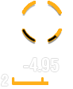
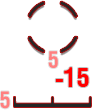

Controls
Navigation

Turn left
Turn right
Speed up / Forward
Slow down / Back

Trying to take tank tactics into World of Warships won’t help much. While battlefield awareness can be beneficial, warships are vast steel juggernauts that take a bit of time to get moving and reach full speed.
Rudder locked to port (left)
 Rudder locked to starboard (right)
Rudder locked to starboard (right)
Ships respond slowly to commands, so play with patience and plan your maneuvers ahead of time.
Naval Gunnery
Military equipment of any ship consists of:
- Primary armament: the guns of the main battery used to fight against heavily armored targets, such as battleships and cruisers
- Secondary armament: smaller guns that can be useful forfighting fast, lightly protected destroyers
- AA armament: guns used to fight off airborne attacks
AA guns and secondary batteries fire automatically, but the latter have a much shorter range than your main battery. Hold Ctrl and click a target for your secondaries or AA to fire on.
Firing
MOVETo rotate the ship's guns
 CLICKTo fire a single
shot
CLICKTo fire a single
shot
CLICK AND HOLDFor sequential fire
 DOUBLE-CLICKFor a
main battery salvo
DOUBLE-CLICKFor a
main battery salvo
CLICK THE SCROLL WHEELTo fire and follow the shell with the camera
Before unleashing an ammo inferno on your enemy, fire a pilot shot and see where it lands.Then make quick adjustments to ensure that the rest of your volley hits home.
Aiming
There are two types of camera styles that you can use while aiming:
- Third person view. The first thing you'll see on entering the battle.
- Binocular view. A more precise “sniper” view available when you press Shift.
To deal maximum damage, you may want to orient your warship with her side towards the enemy and your guns in a “broadside”. Just remember, this also leaves your side exposed to the enemy, making you an easier target.
Main Battery Status
Ready

Reloading
Aiming at the
target
Unable to aim at the
target

Disabled and under
repair
Destroyed
Ready
Reloading
Aiming at the target
Unable to aim at the target
Disabled and under repair
Destroyed
To aim properly at a moving enemy ship, place your crosshair in front of her, anticipating where she is likely to be when your shells arrive. This is known as "leading the target.”
Torpedoes
Torpedoes can help a small ship punch above her weight or give a nasty surprise below the water line to an enemy that gets too close. A single torpedo can easily cause substantial flooding or even sink a ship! Torpedoes are the main weapon of destroyers, and are also available on many cruisers. Of course they are also fired by carrier-based torpedo bombers.
While top-tier Japanese torpedo range reaches a whopping 20 km, most torpedoes are short range projectiles that can't travel much further than 5–7 km.
Using Torpedoes
Press to select the torpedo launcher.
You'll see a green arc on both sides of your ship—the firing arc of the torpedo tubes. They're usually limited to the sides of your ship, so you'll need to turn side-on to fire on the enemy.
The smaller green band is the torpedo launch cone—called the spread—that shows where your torpedoes will go. Press again to toggle between two launch cones, a wide spread and a narrow spread. Use narrow spreads for distant targets and wide spreads for close or multiple targets.
Torpedo launch cone (spread)
Torpedo tube angle
Torpedo tube angles
Narrow spread
Wide spread
Press when an enemy ship is in sight.
A grey “lead indicator” cone appears. It is based on the heading and speed of the target and is updated continuously. Overlaying the green cone on the grey one gives you the best chance of hitting the target—assuming the target does not change course or speed after you launch the torpedoes.
To launch torpedoes
When firing torpedo salvos, it’s a good idea to fire one upon the lead indicator and one slightly behind. This lets you hit ships even if they panic and try to turn away.